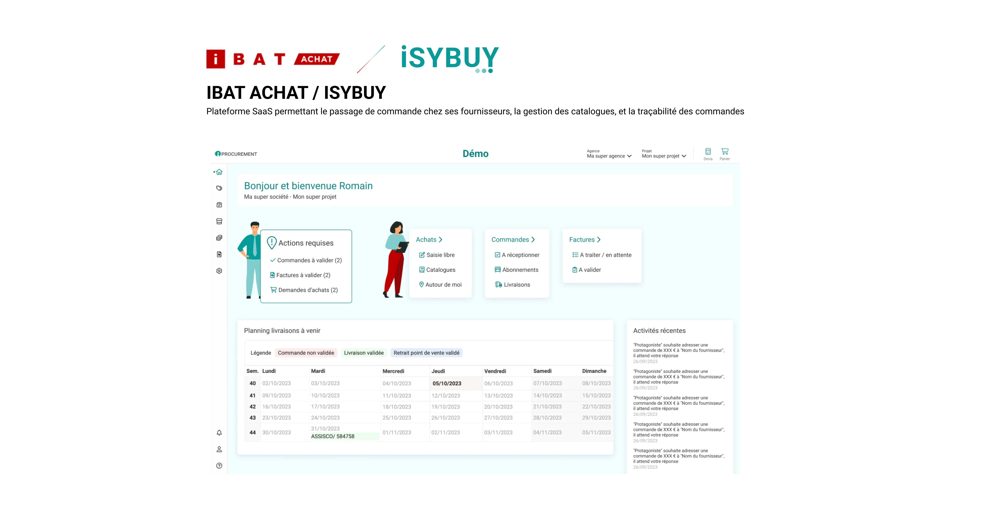
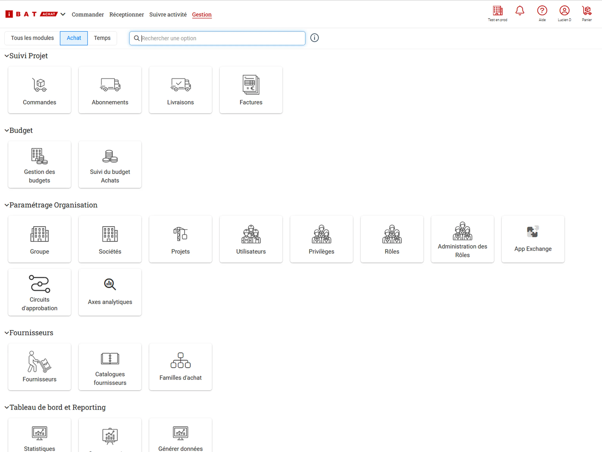
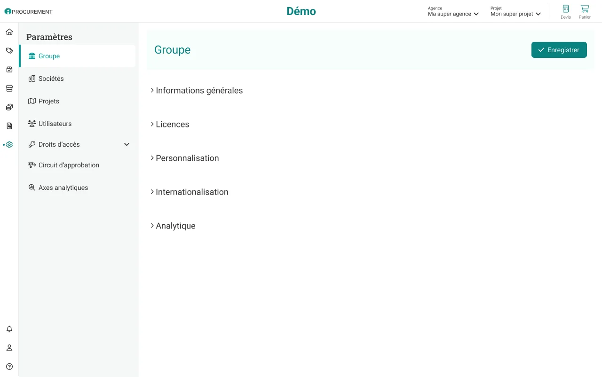
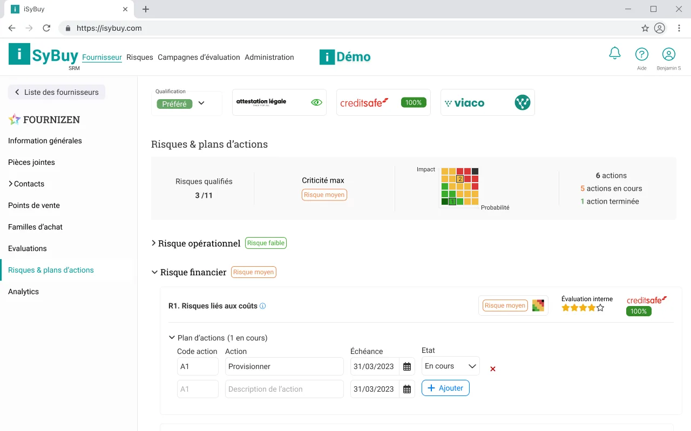
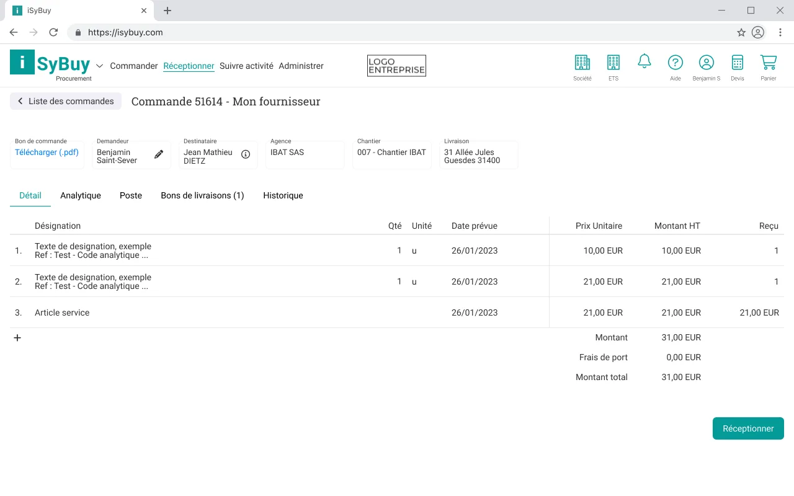
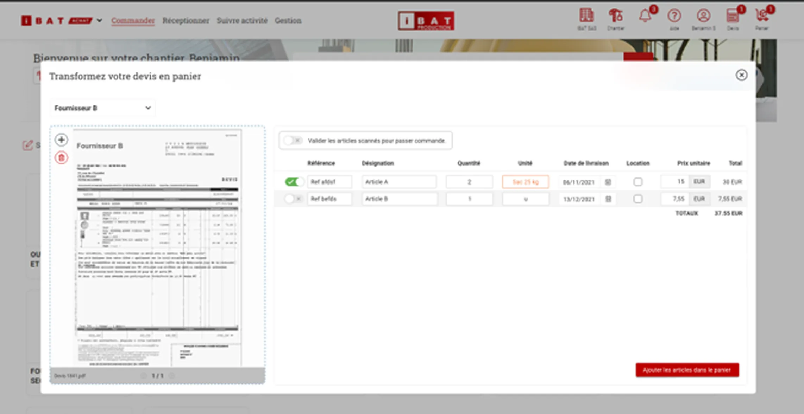
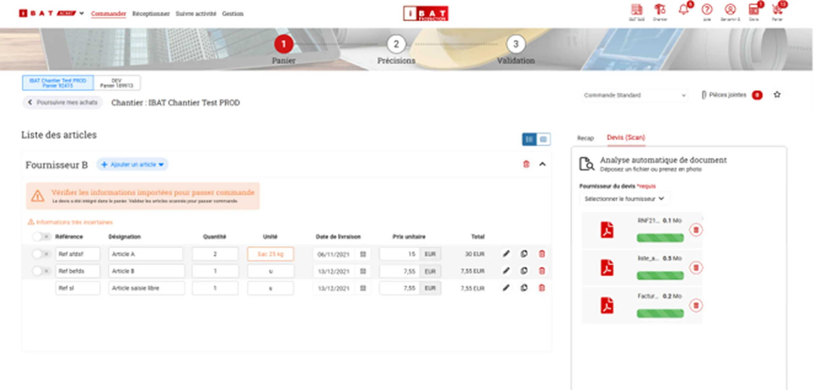
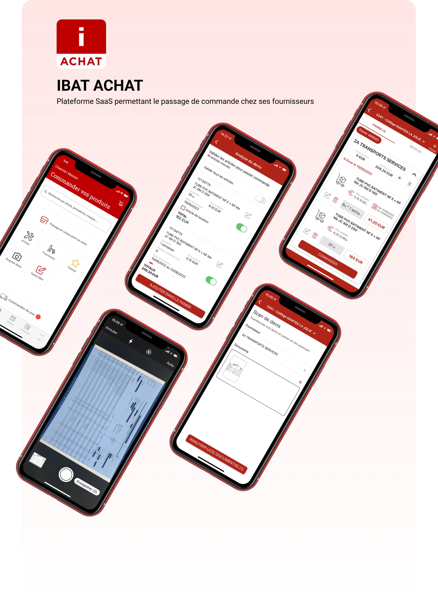
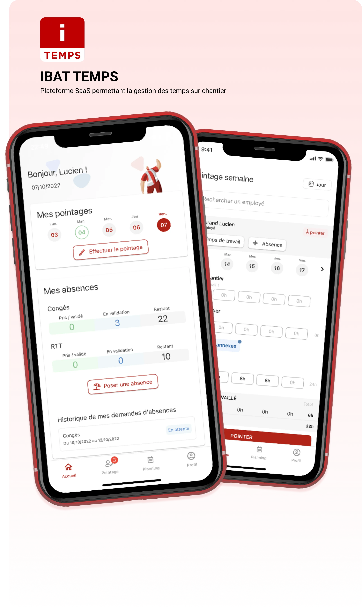
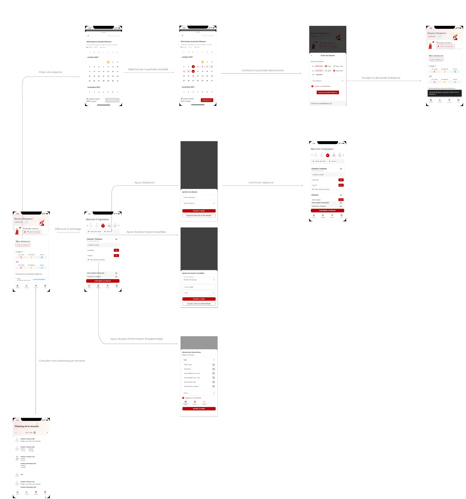

SaaS procurement platform (ISYBUY)
Adapting a core product into a white-label solution, with a design system and evidence-based decisions.
ISYBUY adapts the IBAT Achat core for corporate procurement outside construction, sold as a white label. I led a design system of generic rules (tables, forms, redesigned navigation) so a single base accommodates all clients without custom work, plus sourcing views specifically for managing the supplier panel.

ISYBUY HOMEISYBUY homepage, the procurement platform adapted for corporate use.
ISYBUY is a SaaS platform for supplier ordering, catalog management, and traceability. It is built entirely on the IBAT Achat codebase, the tool designed for construction: the same core product, adapted this time for corporate procurement outside construction and sold as a white label. My role was to lead the design system and conduct user research on this web product, within a team of 1 PO, 1 PM, and 8 developers.
The core product was built incrementally based on needs, without a structuring method. As a result, similar tools like tables and forms worked differently from one screen to another, and the navigation, accumulated in blocks, had become confusing for both users and internal teams. Adapting this core into a white label for a new market made this push for consistency even more necessary.
- Inventoried recurring view types and established a documented design system of generic rules: single-column forms with logical sequences, and a unified table model (unlimited filters, search, column customization, Excel/PDF/image export, pagination).
- Redesigned the navigation, moving from an accumulation of blocks to a side panel and a fixed top bar, after several iterations and foundational thinking intended to serve as a base for future products.
- Adapted this system for white-labeling, ensuring each client finds a coherent base under their own identity.

Before
Navigation accumulated in blocks, becoming confusing.

After
Side panel and fixed top bar, designed to last.
A single core for all clients
Selling the product as a white label made it tempting to adapt each screen for each client on a case-by-case basis. The problem is that as clients are added, this custom work becomes impossible to maintain. I established the opposite approach: a design system of generic rules, table models, forms, and navigation valid everywhere, upon which each client's identity is applied without altering the structure. Consistency comes from the system, not from repeated screen-by-screen work.
This choice requires more upfront effort, but it's what makes white-labeling sustainable: a single core to maintain, client adaptations that don't weaken it, and a reusable base beyond just this product.
The principle I retain: to adapt a product for multiple clients, it's better to have a core generic enough to accommodate them all than case-by-case adaptations that end up piling up.
Sourcing features
Adapting the product for corporate use outside construction wasn't just a reskin. ISYBUY received sourcing features absent from the construction version: supplier evaluation from risk and criticality angles, CSR tracking, and associated action plans. These views are data-dense and designed to help a procurement department decide where to focus its attention. This is also what gave value to the white-label version, offering each client a tool to manage their supplier panel.

Table readability
An example of the rigor applied to the design system: for table columns, I aligned content by its nature (text left, amounts right) and placed the sorting icon opposite to this alignment. This decision preserves readability by preventing the sorting element from blending into the column's reading flow.

ISYBUY successfully brought the core product to a new market, corporate procurement outside construction, without starting from scratch: the same core, white-labeled, enriched with sourcing views specific to this audience. The design system unified recurring views and provided a navigation base designed to outlast this single product, which was exactly the condition for a multi-client adaptation to remain maintainable.
Quote scanning, from paper to cart
A design decision settled by a user test, not by instinct.
Internal debate without consensus: host the scan in the cart page or in a dedicated modal? I prototyped both versions and compared them in a remote test (SUS questionnaire). The modal won because it isolates the critical task. Decision settled by evidence.

MODAL RETAINED AFTER TEST- 01The modal isolates the task: the dense cart context steps back during the critical action.
- 02The scanned quote stays in view: items are checked, not retyped.
- 03Each recognized line is validated one by one (reference, quantity, price) before ordering.
- 04A single exit: add to cart. This is the version the SUS test settled.
The modal version, retained after comparison in user testing.
On the IBAT Achat web platform, a feature allows converting a supplier quote into an order cart directly from its scan. It's a key task in the procurement journey, but also a dense one: you must recognize items, check quantities and prices, then validate. The design question was where to house this in the interface.
Two integrations clashed, and the debate was internal, with no obvious consensus. Should the scan be hosted directly on the cart page, closest to the ordering context, or isolated in a dedicated modal? Each side had arguments, and deciding by instinct risked imposing an intuition rather than an answer.

Isolating the critical task in a modal
Rather than deciding by instinct, I prototyped both versions in Adobe XD and Figma, then compared them remotely with two user groups using a SUS questionnaire. Integrated into the cart page, the task became diluted amid too many elements and users struggled to complete it. The modal won precisely because it isolated the action and focused attention solely on what needed to be done. I therefore abandoned the in-page integration in favor of the clearer, more efficient modal.
The principle I retain: a critical task benefits from being isolated from its context when the environment is dense.
The chosen journey was validated directly by users in testing rather than picked by instinct, settling an internal debate with evidence. Satisfaction feedback on the solution was positive. It is the clearest example, in my work on IBAT, of a design decision arbitrated by measured comparison rather than opinion.
Mobile procurement
Ordering from suppliers from the construction site, even without a network.
Field ordering app designed around offline mode: prepare an order without a network, sync upon return. Secondary decision: allow logging of on-site purchases to avoid forcing a single workflow.

IBAT ACHAT APPOrdering and document scanning screens.
Before the app, ordering was done by phone via a sales rep. The process was slow, generated paperwork, and offered no traceability. In the field, a concrete constraint was added: the mobile network is often weak or absent on a construction site, and purchasing habits don't always follow a clean digital flow.
- Conducted user research (personas, user journey) to understand how ordering actually happens in the field.
- Designed wireframes then a high-fidelity storyboard: placing an order, tracking, and document scanning to capture a quote or delivery slip directly from the phone.
- Adapted it into the IBAT UI kit to maintain consistency with the rest of the suite.
Designing for the networkless site, not the connected office
The simple way to design an ordering app is to assume a permanent connection. On a construction site, this assumption fails. I chose to design around offline mode: preparing and logging an order without a network, then synchronizing once the connection returns.
It's a structuring constraint that changes the design: thinking about intermediate states, what is saved locally, what syncs, and how the user knows where they stand. This stance comes directly from field observation during research, not from a technical preference.
Respecting on-site purchasing habits
Not everything goes through an advance order. Sometimes a purchase is made directly at a point of sale. Rather than forcing a single flow, the application allows retroactive entry of an on-site purchase, ensuring traceability remains complete without constraining field habits.
The application replaced phone orders and paperwork with a traceable journey, usable from the site even without a network. Document scanning simplified capturing quotes or slips without re-entry.
Time tracking on site
Tracking team hours without re-entry, from the field to the office.
Replacing pen-and-paper with a single entry closer to the field. Key decision: reconciling information density (weekly view) with direct manipulation (in-cell editing) in the same grid. V2 reworked after user testing.

IBAT TEMPSThe weekly grid: direct entry in the cell.
Hour tracking was done with pen and paper, with later re-entry and no centralization. Hours noted in the field were re-typed later, a source of errors and wasted time, and no one had a reliable consolidated view.
- Conducted user research (personas, user journey) to map out who enters what, when, and what each profile expects from the tool.
- Designed wireframes then a high-fidelity storyboard covering clocking in, entering hours and absences, adding equipment rental hours, and checking the schedule.
- Produced a second version improved by user tests, fixing the friction points from the first.

Seeing everything at a glance, without giving up fast editing
Tracking hours poses a classic data-rich interface dilemma: to make a decision, you need a dense overview; but to enter data quickly in the field, you need direct editing. Density and direct manipulation pull in opposite directions.
I designed the view to reconcile both: a grid that shows the entire week at once, where entry and correction happen directly in the cell, right where the eye is already looking, without opening a separate form. Direct manipulation happens within the density, not beside it.
The application replaced pen-and-paper and re-entry with a single capture closer to the field, usable immediately by HR without double entry. The second version, reworked based on testing, fixed the friction points of the first.